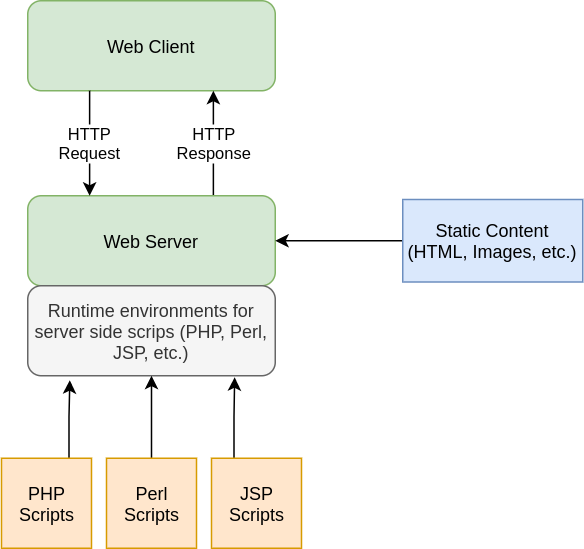

Introduction
- HTML/XHTML content is static
-
JavaScript makes pages more dynamic, but the content is almost static
- Dynamic content
-
Pages that look differently depending on the user who visits, status,
processing requests, etc.
- E.g. Search engines, web mails, etc.
-
Web applications (hotel booking, web search applications, …) is not
possible using only HTML/XHTML, CSS and JS; why?
Typical Web based Application
We need server side active code to perform actions & generate (dynamic)
content

Common Gateway Interface
- We need code beside web servers
- Web server by itself is not designed for data processing
- Initial idea
- An external program can perform the processing
- Questions
- How can client ask server to run an external program?!
- New HTTP Method to run (e.g. HTTP RUN)?!! 🤔
-
How does web server exchange information with the external program?
- Sending input data & Getting the output
- The mechanism should be standard
Common Gateway Interface (Cont.)
-
The Standard protocol for interfacing external application software with
the web server
- CGI 1.1 specified in RFC 3875, 2004
-
The external program runs by the
standard HTTP requests & proper server
configuration
-
Information is passed from external software to the web server as the
output on stdout
-
HTTP response is the
output of the external program on the
server machine
-
Information can passed from the web server to the executable program
according to HTTP request method
CGI Example: Server Config
<IfDefine ENABLE_USR_LIB_CGI_BIN>
ScriptAlias /cgi-bin/ /var/www/html/IE/cgi-enabled/
<Directory "/var/www/html/IE/cgi-enabled/">
AllowOverride None
Options +ExecCGI -MultiViews +SymLinksIfOwnerMatch
Require all granted
</Directory>
</IfDefine>
CGI Example: Source Code
#include <stdio.h>
int main(void){
// http header
printf("Content-Type: text/html\r\n");
printf("Connection: close\r\n");
printf("\r\n \r\n");
// http body
printf("<html><head></head>\r\n");
printf("<body>\r\n");
printf("Hello world.\r\n");
printf("<br />\r\n");
printf("Bye Bye\r\n");
printf("</body></html>\r\n");
return 0;
}
CGI Example: Compile
> ~# cd /var/www/html/IE/cgi-enabled
> /var/www/html/IE/cgi-enabled# gcc -o hello_c.cgi hello_c.c
> /var/www/html/IE/cgi-enabled# ./hello_c.cgi
Content-Type: text/html
Connection: close
<html><head></head>
<body>
Hello world.
<br />
Bye Bye
</body></html>
CGI Example: Test

The “Hello World” CGI in Bash Script
#!/bin/bash
# http headers
echo "Content-Type: text/html"
echo ""
# http body
echo "<html><head></head>"
echo "<body>"
echo "Hello world."
echo "<br />"
echo "Bye Bye"
echo "</body></html>"
Getting parameters from the client
-
Parameters can be passed from the user to the CGI script through an html
<form> or
fetch or ...
<form action="script.cgi" method="GET">
<input type="…" name="input1" />
<input type="…" name="input2" />
…
<input type="…" name="inputN" />
</form>
- The script.cgi will get the parameters as:
input1=val1&input2=val2& ... &inputN=valN
The mechanism depends on the HTTP Method
Getting parameters from the client
-
Parameters can be sent through the
GET method
-
CGI script will receive the parameters from the web server in an
environment variable
$QUERY_STRING
-
In C: You can access it by
getenv("QUERY_STRING")
-
Parameters can be passed through the
POST method (in the body of the HTTP
Request)
-
The CGI script will receive the parameters from the web server in the
standard input (
stdin)
CGI Environment Variables
| CONTENT_TYPE |
The data type of the content. Used when the client is sending attached
content to the server. For example, file upload.
|
| CONTENT_LENGTH |
The length of the query information. It is available only for POST
requests.
|
| HTTP_COOKIE |
Returns the set cookies in the form of key & value pair. |
| HTTP_USER_AGENT |
The User-Agent request-header field contains information about the
user agent originating the request. It is name of the web browser.
|
| PATH_INFO |
The path for the CGI script. |
| QUERY_STRING |
The URL-encoded information that is sent with GET method request.
|
| REMOTE_ADDR |
The IP address of the remote host making the request. This is useful
logging or for authentication.
|
| REMOTE_HOST |
The fully qualified name of the host making the request. If this
information is not available, then REMOTE_ADDR can be used to get IR
address.
|
| REQUEST_METHOD |
The method used to make the request. The most common methods are GET
and POST.
|
| SCRIPT_FILENAME |
The full path to the CGI script. |
| SCRIPT_NAME |
The name of the CGI script. |
CGI Pros & Cons
- What is the main advantage(s) of CGI?
- Any programming language can be used
- What the main drawback(s) of CGI?
- We should generate whole HTML document in CGI
-
For each request, a new process is created
-
Process creation & termination & Inter-process communication
overhead
- Security is another major issue
- Any other way to run code in server side?
Solving CGI Problems
- Empower the server to run code
- But, Which programming language? HTML?!!!
- Should we compile & debug web-pages?
- Should web server interpret/compile the code?
Web servers are not build to be compiler!!
- How to mix code & HTML?
-
Answer: Interpreter as a web server plugin is
responsible
-
Use any scripting language that its interpreter is available for web
server, e.g., PHP runtime environment
-
Configure web server to use interpreter for a specific file types that
contain mixed code & HTML, e.g., .php files
- Web server run the interpreter for codes and uses the output
Overview of Server-Side Scripting
